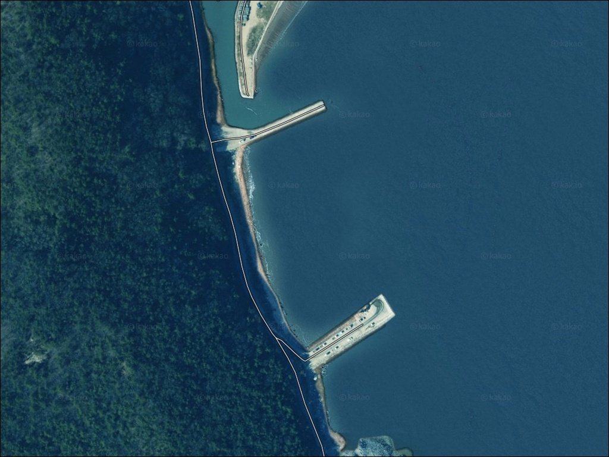
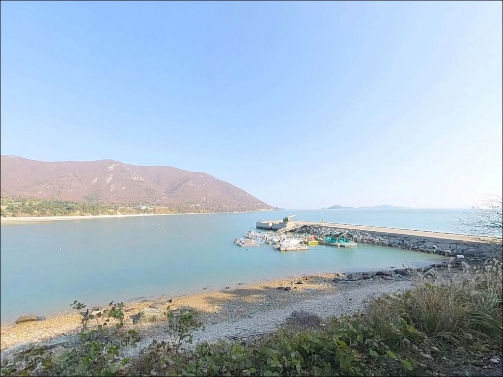
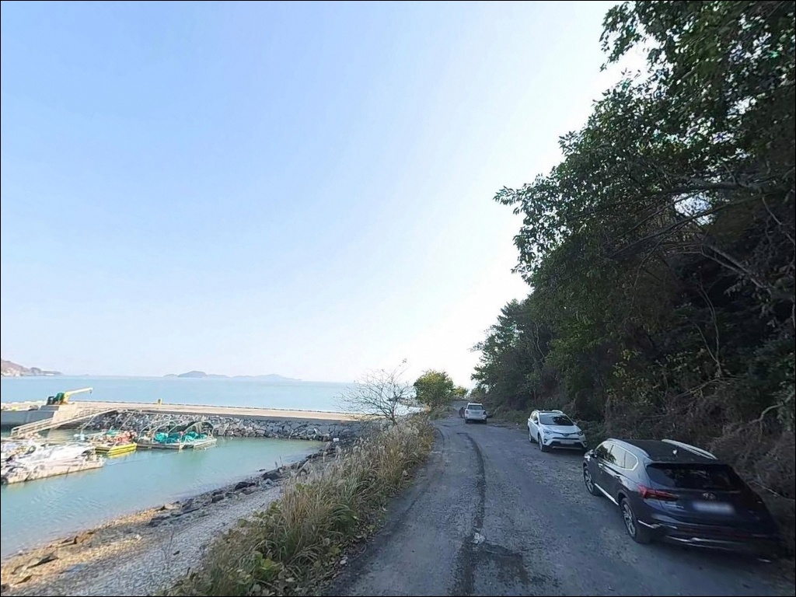
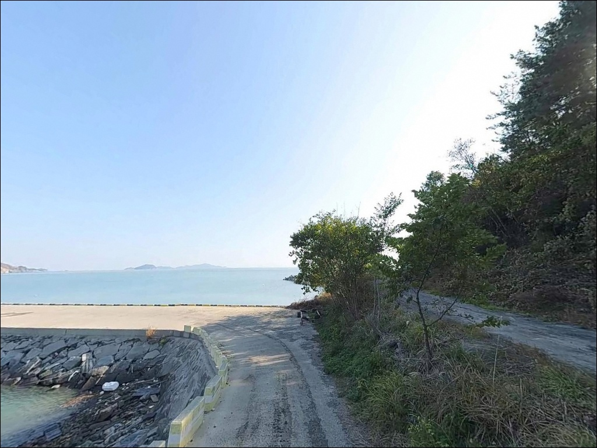
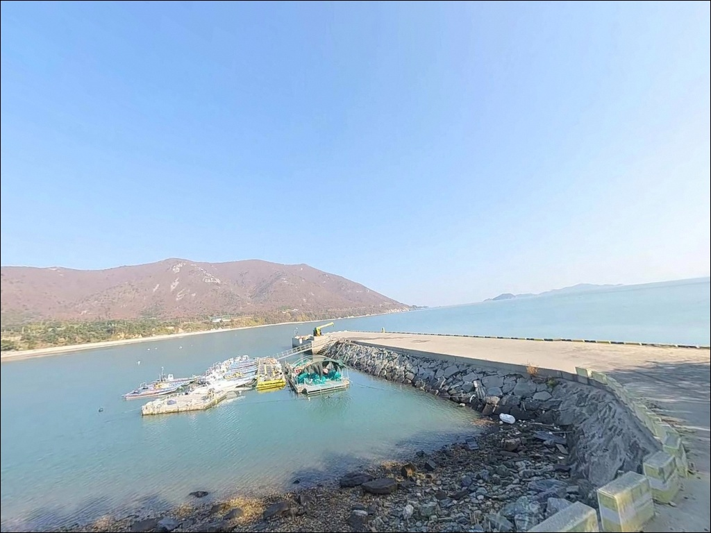
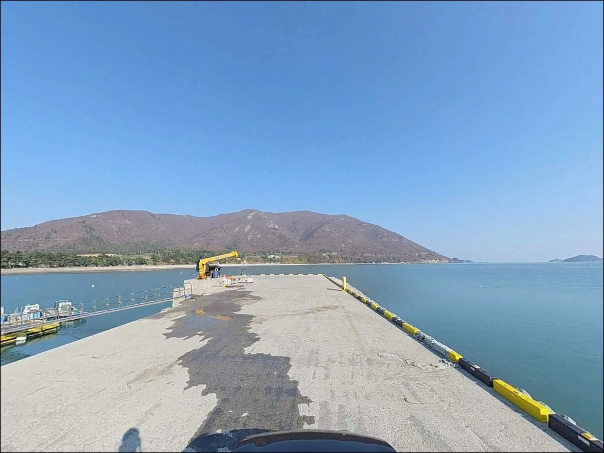
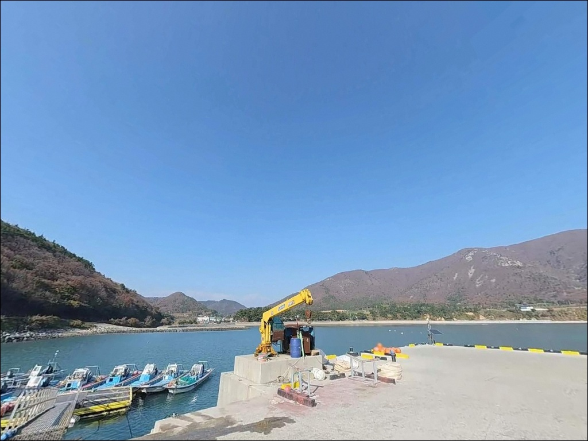
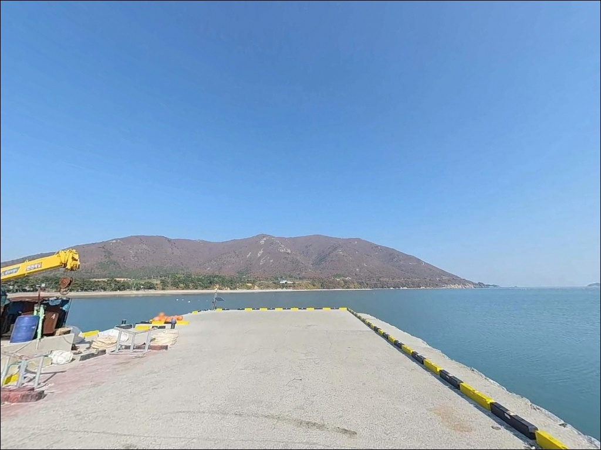
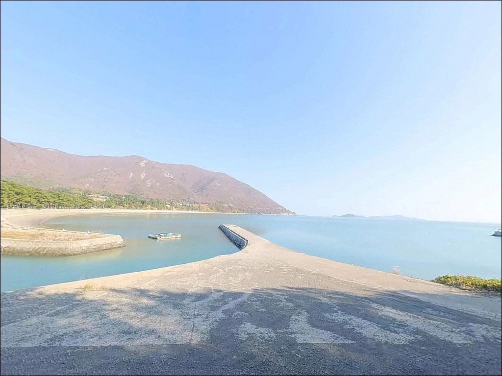

거금도 금장방파제 찌낚시, 들물 시 좌측 조류 타야 터지는 외항 입질
이 페이지에는 광고(제휴 링크 포함)가 있으며, 광고 링크를 통해 구매하면 운영자가 판매 수익 또는 수수료를 받을 수 있습니다. 포인트 사진: 카카오맵 스카이뷰·로드뷰. 이 페이지의 지도·사진 이미지는 카카오맵의 실제 서비스 이미지와 다를 수 있습니다.


포인트 안내
금장방파제(금장선착장)
전남 고흥군 금산면 어전리 48-14
거금도 남단 방파제에서 가장 많이 틀리는 판단은
"외항이면 어디서든 찌를 던지면 된다"는 생각입니다.
들물 때 좌측으로 형성되는 조류 흐름을
확인하지 않으면, 테트라 끝단에 자리를 잡고도
입질 없이 시간만 보내는 상황이 만들어집니다.
조류 방향과 타이밍이
이 포인트의 출조 성패를 가르는 첫 번째 기준입니다.
이 글은 금장방파제의 지형 구조와
낚시 방식별 공략 조건, 진입 환경,
차박 체류 여건에 집중합니다.
조황 단정이나 특정 어종 보장은
이 글의 범위에 포함되지 않습니다.

1. 진입 동선과 차량 접근 조건
거금도는 2011년 개통된 거금대교로
소록도를 경유해 육지와 차량으로 연결된 섬입니다.
금장방파제까지는 거금일주로를 따라
어전리 방향으로 진입하며,
도로 전 구간이 포장 상태로
일반 승용차 기준 진입에 무리가 없는
수준입니다.
방파제 입구까지 차량 접근이 가능하며,
진입 후 회차 공간도 확보되어 있습니다.
주차는 방파제 입구 공터에
약 10대 내외 가능하며,
만차 시 바로 옆
금장해수욕장 공영 주차장을 대신 활용합니다.
두 곳 모두 방파제에서 걸어서 이동 가능한 거리입니다.
대형 SUV나 캠핑카 등 전장이 긴 차량은
방파제 입구 공터의 면적을 미리 확인하는 것이
좋습니다.
어선 정박 동선과 겹치지 않는 자리를
먼저 판단하고 주차해야
출조 후 차량 이동 문제가 생기지 않습니다.

2. 차박 환경과 야간 체류 여건
금장방파제 바로 옆에 금장해수욕장이 붙어 있습니다.
백사장과 소나무 숲이 연결된 구조로,
방파제에서 낚시를 마친 뒤
소나무 숲 쪽 주차 공간에서 하룻밤 머무는
형태가 이 지역의 일반적인 차박 패턴입니다.
민가 밀집도가 낮고 조용한 편이라
프라이버시 확보에 큰 어려움이 없습니다.
방파제에는 가로등이 설치되어 있어
야간 보행 안전은 어느 정도 확보됩니다.
다만 거금도 남쪽 외해를 직접 바라보는 구조상
바람 영향이 강한 편이며,
남풍·남동풍 계열 바람이 강한 날에는
내항 쪽으로 차량을 이동하는 것이 낫습니다.
내항 방향은 방파제와 지형이 바람을 막아주는 구조입니다.


3. 주변 편의시설 및 인프라 현황
금장해수욕장 공중화장실이 방파제에서
도보 150m 거리에 있습니다.
거금도 남쪽 포인트 중에서는
화장실 접근성이 가장 양호한 편에 속합니다.
금장마을 내에 소규모 슈퍼가 있어
기본적인 식수 확보는 가능합니다.
거금도 대흥리 면사무소 방향으로 이동하면
낚시용품점이 운영 중입니다.
밑밥과 낚시 소품을 현지에서 조달할 수 있으나,
방문 전 전화로 영업 여부를 확인하는 것이 좋습니다.
녹동항 방면으로는 이마트 도양점을 비롯한
대형 편의시설이 거금대교를 건너
약 10km 거리에 있습니다.
응급 상황 발생 시를 대비해
금산면 소재지 방향에 의원과 약국이 있으며,
농협 하나로마트를 통한 비상 물품 수급도 가능합니다.
원거리 섬 포인트 특성상
비상약품과 여분 음식은 출발 전 챙기는 편이 안전합니다.

4. 진입 전 반드시 챙겨야 할 준비사항
금장방파제 방문 전 가장 먼저 확인할 것은
물때입니다.
거금도 남쪽 해역은 외해 조류의 영향을 직접 받아
사리 전후에는 테트라 끝단에서도
채비 컨트롤이 쉽지 않을 만큼 조류가 세집니다.
바다타임에서 금장 인근 기준 물때를 확인하고
들물 시작 전후, 조금 주변 타이밍을
기점으로 출발 시각을 맞추는 것이 기본입니다.
찌낚시를 주력으로 한다면
들물 시 좌측으로 형성되는 조류 방향을
먼저 파악하고 자리를 잡아야 합니다.
조류가 약할 때는 원거리 공략이 유리하고,
조류가 강할 때는 전방 20m 내외 구간을
집중적으로 노리는 방식이
이 포인트 지형에 잘 맞습니다.
외항 테트라포트 구간은 경사가 있고
이끼가 끼기 쉬운 구조입니다.
핀펠트화와 구명조끼는 출발 전 차량에 실어야 하며,
야간 출조 시에는 헤드랜턴과 여분 배터리도
필수입니다.
여밭 지형이 발달한 포인트인 만큼
여분 채비를 넉넉하게 준비하는 편이 좋습니다.

5. 외항 테트라 구조에서 조과가 갈리는 이유
금장방파제는 거금도 남단 금장해수욕장
동쪽 끝에 자리한 120m 내외의 'ㄱ'자형 구조입니다.
외항 전 구간에 테트라포트가 거치되어 있고,
바깥쪽이 거금도 남쪽 외해와 바로 연결되어
조류 소통이 매우 원활한 구조입니다.
간조 시에도 끝단 수심은 5m 이상을 유지하고,
만조 시에는 8m 권까지 확보됩니다.
방파제 초입부는 해수욕장과 이어지는
모래 바닥 구간이며,
끝단으로 갈수록 수중 여가 발달해
밑걸림이 잦아지는 구조입니다.
찌낚시는 끝단에서 외항 방향으로 흐르는
조류를 타는 구간에서 입질이 집중되고,
파도가 있는 날에는 오히려
근거리 여밭 경계선이 더 잘 반응하는 편입니다.
조류 방향과 세기에 따라
자리 선택이 달라지는 구조입니다.
내항과 외항의 경계 꺾임 지점은
조류가 변환되는 1급 포인트 위치로,
이 구간은 찌낚시와 에깅 모두
탐색 우선 대상입니다.
출조 전 최신 조황은
꼭 먼저 검색해 보시기 바랍니다.


6. 포인트에 어울리는 낚시 스타일
이 포인트에서 가장 잘 맞는 낚시는
찌낚시입니다.
외항 테트라포트 전 구간을 따라
감성돔 공략이 가능하며,
겨울~초봄 시즌에 씨알 있는 개체가
끝단으로 붙는 경향이 있습니다.
조류 흐름과 파도 세기에 따라
근거리와 원거리를 번갈아 탐색하는 방식이
이 구조에 맞습니다.
에깅도 빠질 수 없는 스타일입니다.
내항 석축과 방파제 꺾이는 구간 주변으로
갑오징어와 무늬오징어의 은신처가 형성됩니다.
봄~초가을이 갑오징어 에깅의 적기이며,
5월 이후에는 문어 루어도
여밭 바닥 탐색과 함께 병행할 수 있습니다.
야간에는 볼락 루어낚시로
테트라 경계선과 내항 구간을 천천히 탐색하면
반응을 기대해볼 수 있습니다.
원투낚시는 방파제 입구에서
해수욕장 방향 사질대를 공략하는 방식입니다.
바닥 걸림이 적은 모래 구간이라
밑걸림 부담 없이 던질 수 있고,
도다리·보리멸 계열 바닥 어종을
초보자도 부담 없이 노릴 수 있는 자리입니다.

7. 대안 포인트와 플랜 B 동선
금장방파제 자리가 여의치 않거나
조류가 너무 강해 채비 컨트롤이 어려울 때는
익금방파제가 첫 번째 대안입니다.
금장에서 해안도로로 1~2km 거리이며,
동일 해안선을 공유하는 포인트라
물때와 어종 패턴이 거의 같은 조건입니다.
접근이 비교적 수월한 구조입니다.
거금도 북쪽의 금진항은
금장에서 약 7~8km 거리입니다.
소록도 방면 수로와 마주보는 위치라
조류 흐름이 활발한 해역으로,
감성돔과 갑오징어 포인트로 알려진 곳입니다.
현지 낚시가게도 항 내에 입점해 있어
밑밥과 채비 현지 조달도 가능합니다.
거금대교를 건너 약 10km 거리의 녹동항은
대형 항구형 포인트로 다양한 낚시 방식이 가능하고,
이마트 도양점과 편의점이 인접해
보급 기점으로도 활용할 수 있습니다.
금장방파제를 첫 번째로 공략하고
여의치 않으면 녹동항을 기점 삼아
주변 갯바위와 항구 포인트를 둘러보는 동선이
거금도 주변에서 가장 효율적인 플랜 B입니다.

외항 테트라와 해변 소나무 숲이
함께 있는 포인트, 금장방파제
감성돔 찌낚시나 갑오징어 에깅을
메인으로 삼는 낚시인이라면
금장방파제 지형 조건은 잘 맞는 구조입니다.
외항 테트라포트의 수심과 조류 흐름,
내항 꺾임 구간의 에깅 여건을 함께 갖추고 있어
한 자리에서 복수 방식을 운용하기 좋은 포인트입니다.
반면 물때 확인 없이 사리 전후에 진입하거나
조류 방향을 무시하고 아무 자리나 잡으면
끝단을 차지하고도 조과 없이 돌아오는
상황이 만들어집니다.
물때, 핀펠트화, 여분 채비,
이 세 가지를 갖추고 나서야
금장방파제가 제대로 보입니다.
편의시설이 비교적 잘 갖춰진 거금도 남쪽에서
소나무 숲 옆 차량에 자리를 잡고
외항 테트라에 찌를 세우는 차박 출조라면,
낚시꾼에게도 가족에게도
기억에 남는 밤이 될 수 있는 곳입니다.